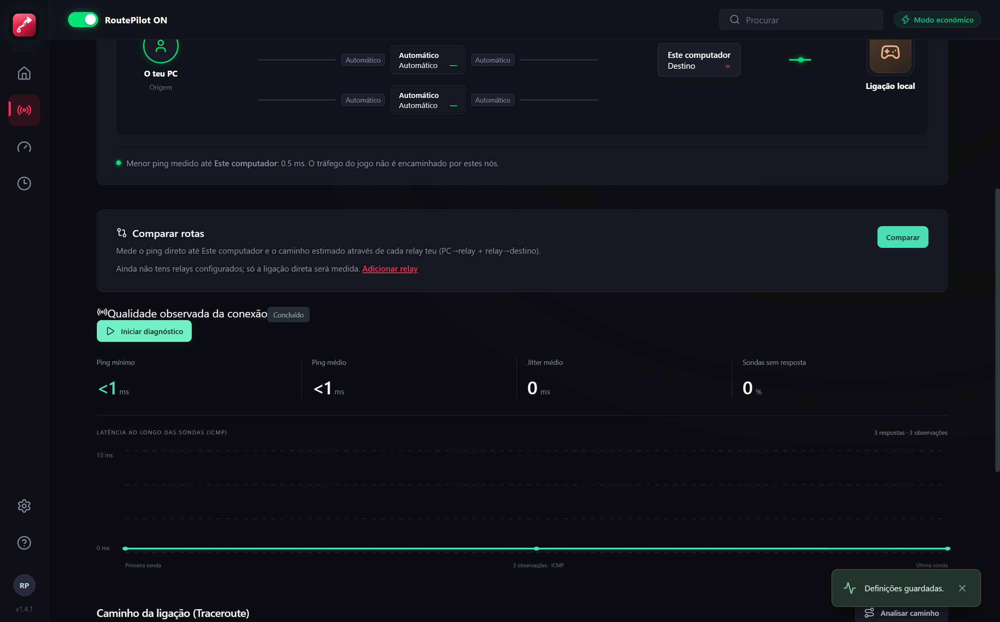

Mede o teu ping real em servidores de Counter-Strike 2, Valorant, EA FC e mais. Seleção automática da menor latência, traceroute em tempo real e deteção direta de jogos da Steam.
Compatível com Windows 10 e Windows 11 (64-bit) · 100% Gratuito
Sem métricas fictícias, sem VPNs lentas e sem alterações invasivas no sistema.
Envia sondas de teste a múltiplos destinos em simultâneo (Londres, Frankfurt, Madrid, etc.) e escolhe a rota mais veloz para cada jogo.
Reconhece automaticamente as tuas bibliotecas Steam, Epic Games e GOG, exibindo as capas oficiais de alta definição dos teus títulos.
Visualiza graficamente a ligação da tua cidade de origem, os nós intermédios e o centro de dados de destino do jogo.
Mínimo, média, jitter consecutivo e gráfico com amostragem real sem inventar valores artificiais.
Instala uma vez. A aplicação consulta o GitHub Releases em segundo plano e atualiza-se de forma invisível sem precisares de voltar a descarregar ficheiros manualmente.
Instala o relay do RoutePilot num servidor teu (VPS) e compara o ping direto com o caminho via relay: PC → relay + relay → servidor do jogo. Pedidos UDP assinados com HMAC.
Não instala adaptadores de rede virtuais, não altera DNS, não mexe na firewall e não requer criação de conta nem mensalidade.
Não. Abres o teu jogo normalmente pela Steam, Riot Client ou Epic Games Launcher. O RoutePilot corre em paralelo para monitorizar a rota e a estabilidade da tua ligação.
Ao utilizares o instalador do RoutePilot, a aplicação verifica novidades no repositório do GitHub a cada 30 minutos. Quando uma nova versão é publicada, é descarregada silenciosamente e instalada quando fechas ou reinicias a aplicação.
Não. O RoutePilot é um analisador e diagnosticador nativo de rotas e latência direta para os servidores oficiais dos jogos. Não altera nem redireciona o tráfego do teu computador através de servidores de terceiros.
Um relay é um servidor de passagem que tu próprio alojas, por exemplo num VPS em São Paulo. Com ele, o RoutePilot mede se o caminho através desse servidor seria mais rápido do que a ligação direta. É opcional, e nesta fase serve só para medir: o tráfego do jogo continua a ir direto. As instruções estão em relay/README.md.
Ficam guardados exclusivamente no teu computador, na tua pasta local de utilizador (AppData). Nenhuma informação ou telemetria é enviada para servidores externos.